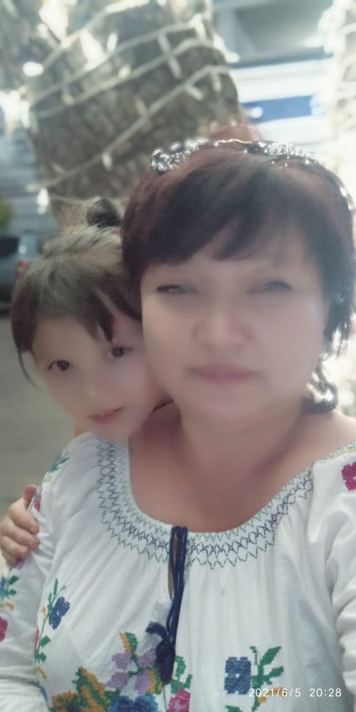
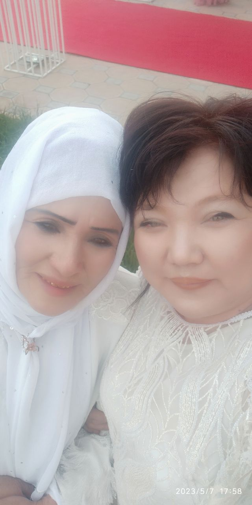
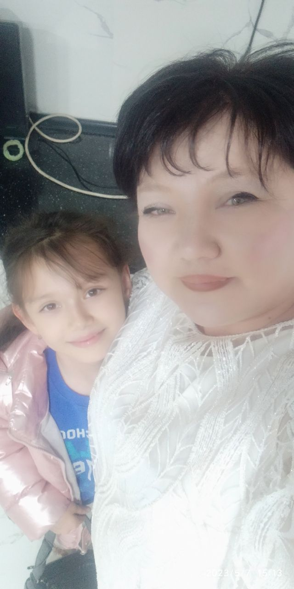

Поздровление для моей мамы
Пусть иногда мне не хватает слов,
Не думай, что тебя не уважаю,
Что не ценю я всех твоих трудов,
Что никогда и ничего не замечаю.
За все слова, что я не говорю,
Я у тебя прошу сейчас прощения!
Ты знай, что я тебя очень люблю.
Моя мамуля. Мама, с днем рождения.
Пусть каждый день приносит тебе радость.
Здоровья, счастья я желаю и любви.
Пусть ангелы тебя оберегают
На ждущем впереди тебя пути.
Поздровление для моей мамы
Мамочка, добрая и дорогая,
Неповторимая, сердцу родная,
Ни для кого пусть не будет секретом —
Ты самая лучшая мама на свете!
Спасибо тебе за бессонные ночи,
Мы ценим и любим тебя очень-очень!
Желаем тебе в день волшебный рождения
Веселья, удачи, любви и везения.
Будь самой красивой, счастливой и нежной,
Во всем мы поможем, поддержим, конечно.
Пусть будет здоровье, достаток и счастье,
Всегда полагайся на наше участие.
И помни, мамуля, и верь, что на свете
Тебя обожают любимые дети!
Поздровление для моей Мамы
Милая, любимая, родная!
Поздравляю, мамочка, тебя.
И от всей души тебе желаю
Только мира, радости, добра!
Нет тебя любимей и дороже,
Нет тебя надежней и нежней.
Ты всегда советом мне поможешь.
Нет тебя отзывчивей, добрей.
Пусть глаза слезятся лишь от счастья,
Пусть улыбка близким дарит свет.
Ты одна на свете всех прекрасней,
Для меня ты в мире лучше всех!
Поздровление для моей Мамы
Сегодня, мама, праздник твой!
Хочу сказать со всей душой:
Роднее нет тебя на свете!
Прими же поздравления эти.
Живи без горя, не старей,
Пускай не будет грустных дней.
Почаще смейся, улыбайся,
Такой же доброй оставайся.
Болезни смело прочь гони,
Пускай в глазах горят огни.
Желаю света и тепла,
Чтоб ты счастливою была!

Поздровление для моей Мамы
Лишь с годами, мама, понимаю,
Сколько сил вложила ты, труда,
Чтоб взрастить и на ноги поставить,
В сердце заронить зерно добра.
Мамочка, за всё тебе спасибо:
За уроки, ласку и любовь.
Будь здоровой, искренне счастливой,
Пусть мечты сбываются из снов.
С днем рожденья, мама, поздравляю.
Пусть еще немало долгих лет
Путь твой ангел свыше освещает,
А Господь хранит тебя от бед.
Пусть твое сердечко громче бьется
Лишь от гордости за внуков и детей.
Пусть тебе всё в жизни удается,
Самой лучшей из всех матерей.
Поздровление для моей Мамы
С днем рождения, дорогая,
Моя мамочка, родная!
Будь всегда-всегда здоровой,
Самой доброй и веселой.
С позитивом верь в удачу,
Будь счастливой, не иначе,
Утром встань, открой окошко
И впусти в него немножко
Света, радости, везения,
Смеха, шуток, настроения,
Бодрость духа, сил, добра
И душевного тепла!
Поздровление для моей Мамы
Нет на свете сердца ближе,
Нет дороже и родней,
Чем у самой ненаглядной
Милой мамочки моей.
С днем рождения, родная!
Пусть Господь тебя хранит
От пустых переживаний
Ссор и мелочных обид.
Пусть всегда добро и радость
Будут там, где будешь ты.
Так полна тепла ты, света
И душевной чистоты.
Для меня ты самый близкий
И любимый человек.
Мы с тобою неразлучны,
Нитью связаны навек.
Поздровление для моей Мамы
Тебя дороже в мире нет.
Пусть Бог хранит тебя от бед.
И в день рожденья твой, родная,
Тебя сердечно поздравляю.
Желаю счастья, и здоровья,
И сердца, полного любовью.
Что годы мчатся — не беда,
В душе ты, мама, молода.
Веселой будь, оптимистичной,
Красивой, смелой, ироничной.
Скажу я, что на всей Земле
Подобных, мама, нет тебе.
Поздровление для моей Мамы
Поздравляю мамочку свою.
Очень сильно мамочку люблю!
Здоровья крепкого хочу ей пожелать,
Дарить улыбки, никогда не унывать.
Решение найти любых проблем.
А также интересных перемен.
Веселых и счастливых дней,
Обаятельных и преданных друзей.
Конечно, море счастья пожелаю
. (точка) просится, но все же продолжаю:
Радостью наполнен будет дом,
Уютно и тепло пусть будет в нём.

Поздровление для моей Мамы
Мамуля милая, родная,
Любимая и дорогая!
Желаю жизни долгих лет,
Ни горести не знать, ни бед.
Ты будь счастливой, улыбайся
И каждым мигом наслаждайся,
Здоровьем крепким удивляй,
Про все болезни забывай.
О чём мечтаешь — чтоб сбывалось,
Чего желаешь — исполнялось.
Пусть яркий блеск в глазах твоих
Приносит радость для родных!

Поздровление для моей Мамы
Хочу поздравить с днем рождения
Тебя, мамулечка родная.
Желаю радости, веселья,
Улыбок добрых, дорогая.
От счастья пусть глаза искрятся,
Мечты твои осуществятся.
Пусть будет классным настроение.
Моя мамуля, с днем рождения!